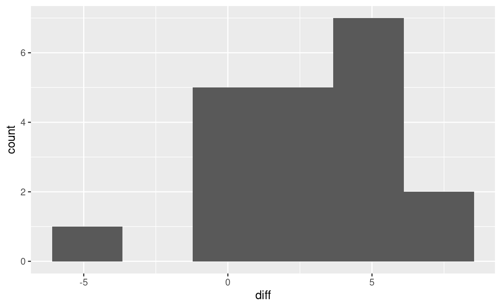

that ends up with a matched pairs test after tidying.
Some cars have a computer that records gas mileage since the last time the computer was reset. A driver is concerned that the computer on their car is not as accurate as it might be, so they keep an old-fashioned notebook and record the miles driven since the last fillup, and the amount of gas filled up, and use that to compute the miles per gallon. They also record what the cars computer says the miles per gallon was.
Is there a systematic difference between the computers values and the drivers? If so, which way does it go?
The drivers notebook has small pages, so the data look like this:
Fillup 1 2 3 4 5
Computer 41.5 50.7 36.6 37.3 34.2
Driver 36.5 44.2 37.2 35.6 30.5
Fillup 6 7 8 9 10
Computer 45.0 48.0 43.2 47.7 42.2
Driver 40.5 40.0 41.0 42.8 39.2
Fillup 11 12 13 14 15
Computer 43.2 44.6 48.4 46.4 46.8
Driver 38.8 44.5 45.4 45.3 45.7
Fillup 16 17 18 19 20
Computer 39.2 37.3 43.5 44.3 43.3
Driver 34.2 35.2 39.8 44.9 47.5This is not very close to tidy. There are three variables: the fillup number (identification), the computers miles-per-gallon value, and the drivers. These should be in columns, not rows. Also, there are really four sets of rows, because of the way the data was recorded. How are we going to make this tidy?
As ever, we take this one step at a time, building a pipeline as we go: we see what each step produces before figuring out what to do next.
The first thing is to read the data in; these are aligned columns, so read_table is the thing. Also, there are no column headers, so we have to say that as well:
my_url <- "https://raw.githubusercontent.com/nxskok/nxskok.github.io/master/gas-mileage.txt"
gas <- read_table(my_url, col_names = FALSE)
gas
# A tibble: 12 6
X1 X2 X3 X4 X5 X6
<chr> <dbl> <dbl> <dbl> <dbl> <dbl>
1 Fillup 1 2 3 4 5
2 Computer 41.5 50.7 36.6 37.3 34.2
3 Driver 36.5 44.2 37.2 35.6 30.5
4 Fillup 6 7 8 9 10
5 Computer 45 48 43.2 47.7 42.2
6 Driver 40.5 40 41 42.8 39.2
7 Fillup 11 12 13 14 15
8 Computer 43.2 44.6 48.4 46.4 46.8
9 Driver 38.8 44.5 45.4 45.3 45.7
10 Fillup 16 17 18 19 20
11 Computer 39.2 37.3 43.5 44.3 43.3
12 Driver 34.2 35.2 39.8 44.9 47.5I usually find it easier to make the dataframe longer first, and then figure out what to do next. Here, that means putting all the data values in one column, and having a column of variable names indicating what each variable is a value of, thus:
gas %>% pivot_longer(X2:X6, names_to = "var_name", values_to = "var_value")
# A tibble: 60 3
X1 var_name var_value
<chr> <chr> <dbl>
1 Fillup X2 1
2 Fillup X3 2
3 Fillup X4 3
4 Fillup X5 4
5 Fillup X6 5
6 Computer X2 41.5
7 Computer X3 50.7
8 Computer X4 36.6
9 Computer X5 37.3
10 Computer X6 34.2
# with 50 more rowsThe things in X1 are our column-names-to-be, and the values that go with them are in var_value. var_name has mostly served its purpose; these are the original columns in the data file, which we dont need any more. So now, we make this wider, right?
gas %>% pivot_longer(X2:X6, names_to = "var_name", values_to = "var_value") %>%
pivot_wider(names_from = X1, values_from = var_value)
# A tibble: 5 4
var_name Fillup Computer Driver
<chr> <list> <list> <list>
1 X2 <dbl [4]> <dbl [4]> <dbl [4]>
2 X3 <dbl [4]> <dbl [4]> <dbl [4]>
3 X4 <dbl [4]> <dbl [4]> <dbl [4]>
4 X5 <dbl [4]> <dbl [4]> <dbl [4]>
5 X6 <dbl [4]> <dbl [4]> <dbl [4]>Oh. How did we get list-columns?
The answer is that pivot_wider needs to know which column each var_value is going to, but also which row. The way it decides about rows is to look at all combinations of things in the other columns, the ones not involved in the pivot_wider. The only one of those here is var_name, so each value goes in the column according to its value in X1, and the row according to its value in var_name. For example, the value 41.5 in row 6 of the longer dataframe goes into the column labelled Computer and the row labelled X2. But if you scroll down the longer dataframe, youll find there are four data values with the Computer-X2 combination, so pivot_wider collects them together into one cell of the output dataframe.
This is what the warning is about.
spread handled this much less gracefully:
gas %>% pivot_longer(X2:X6, names_to = "var_name", values_to = "var_value") %>%
spread(X1, var_value)
Error: Each row of output must be identified by a unique combination of keys.
Keys are shared for 60 rows:
* 6, 21, 36, 51
* 7, 22, 37, 52
* 8, 23, 38, 53
* 9, 24, 39, 54
* 10, 25, 40, 55
* 11, 26, 41, 56
* 12, 27, 42, 57
* 13, 28, 43, 58
* 14, 29, 44, 59
* 15, 30, 45, 60
* 1, 16, 31, 46
* 2, 17, 32, 47
* 3, 18, 33, 48
* 4, 19, 34, 49
* 5, 20, 35, 50It required a unique combination of values for the other variables in the dataframe, which in our case we have not got.
All right, back to this:
gas %>% pivot_longer(X2:X6, names_to = "var_name", values_to = "var_value") %>%
pivot_wider(names_from = X1, values_from = var_value)
# A tibble: 5 4
var_name Fillup Computer Driver
<chr> <list> <list> <list>
1 X2 <dbl [4]> <dbl [4]> <dbl [4]>
2 X3 <dbl [4]> <dbl [4]> <dbl [4]>
3 X4 <dbl [4]> <dbl [4]> <dbl [4]>
4 X5 <dbl [4]> <dbl [4]> <dbl [4]>
5 X6 <dbl [4]> <dbl [4]> <dbl [4]>There is a mindless way to go on from here, and a thoughtful way.
The mindless way to handle unwanted list-columns is to throw an unnest at the problem and see what happens:
gas %>% pivot_longer(X2:X6, names_to = "var_name", values_to = "var_value") %>%
pivot_wider(names_from = X1, values_from = var_value) %>%
unnest()
Warning: Values are not uniquely identified; output will contain list-cols.
* Use `values_fn = list` to suppress this warning.
* Use `values_fn = length` to identify where the duplicates arise
* Use `values_fn = {summary_fun}` to summarise duplicatesWarning: `cols` is now required when using unnest().
Please use `cols = c(Fillup, Computer, Driver)`# A tibble: 20 4
var_name Fillup Computer Driver
<chr> <dbl> <dbl> <dbl>
1 X2 1 41.5 36.5
2 X2 6 45 40.5
3 X2 11 43.2 38.8
4 X2 16 39.2 34.2
5 X3 2 50.7 44.2
6 X3 7 48 40
7 X3 12 44.6 44.5
8 X3 17 37.3 35.2
9 X4 3 36.6 37.2
10 X4 8 43.2 41
11 X4 13 48.4 45.4
12 X4 18 43.5 39.8
13 X5 4 37.3 35.6
14 X5 9 47.7 42.8
15 X5 14 46.4 45.3
16 X5 19 44.3 44.9
17 X6 5 34.2 30.5
18 X6 10 42.2 39.2
19 X6 15 46.8 45.7
20 X6 20 43.3 47.5This has worked.1 The fillup numbers have come out in the wrong order, but thats probably not a problem. It would also work if you had a different number of observations on each row of the original data file, as long as you had a fillup number, a computer value and a driver value for each one.
The thoughtful way to go is to organize it so that each row will have a unique combination of columns that are left. A way to do that is to note that the original data file has four blocks of five observations each:
gas
# A tibble: 12 6
X1 X2 X3 X4 X5 X6
<chr> <dbl> <dbl> <dbl> <dbl> <dbl>
1 Fillup 1 2 3 4 5
2 Computer 41.5 50.7 36.6 37.3 34.2
3 Driver 36.5 44.2 37.2 35.6 30.5
4 Fillup 6 7 8 9 10
5 Computer 45 48 43.2 47.7 42.2
6 Driver 40.5 40 41 42.8 39.2
7 Fillup 11 12 13 14 15
8 Computer 43.2 44.6 48.4 46.4 46.8
9 Driver 38.8 44.5 45.4 45.3 45.7
10 Fillup 16 17 18 19 20
11 Computer 39.2 37.3 43.5 44.3 43.3
12 Driver 34.2 35.2 39.8 44.9 47.5Each set of three rows is one block. So if we number the blocks, each observation of Fillup, Computer, and Driver will have an X-something column that it comes from and a block, and this combination will be unique.
You could create the block column by hand easily enough, or note that each block starts with a row called Fillup and use this idea:
gas %>% mutate(block = cumsum(X1=="Fillup"))
# A tibble: 12 7
X1 X2 X3 X4 X5 X6 block
<chr> <dbl> <dbl> <dbl> <dbl> <dbl> <int>
1 Fillup 1 2 3 4 5 1
2 Computer 41.5 50.7 36.6 37.3 34.2 1
3 Driver 36.5 44.2 37.2 35.6 30.5 1
4 Fillup 6 7 8 9 10 2
5 Computer 45 48 43.2 47.7 42.2 2
6 Driver 40.5 40 41 42.8 39.2 2
7 Fillup 11 12 13 14 15 3
8 Computer 43.2 44.6 48.4 46.4 46.8 3
9 Driver 38.8 44.5 45.4 45.3 45.7 3
10 Fillup 16 17 18 19 20 4
11 Computer 39.2 37.3 43.5 44.3 43.3 4
12 Driver 34.2 35.2 39.8 44.9 47.5 4This works because X1=="Fillup" is either true or false. cumsum takes cumulative sums; that is, the sum of all the values in the column down to and including the one youre looking at. It requires numeric input, though, so it turns the logical values into 1 for TRUE and 0 for FALSE and adds those up. (This is the same thing that as.numeric does.) The idea is that the value of block gets bumped by one every time you hit a Fillup line.
Then pivot-longer as before:
gas %>% mutate(block = cumsum(X1=="Fillup")) %>%
pivot_longer(X2:X6, names_to = "var_name", values_to = "var_value")
# A tibble: 60 4
X1 block var_name var_value
<chr> <int> <chr> <dbl>
1 Fillup 1 X2 1
2 Fillup 1 X3 2
3 Fillup 1 X4 3
4 Fillup 1 X5 4
5 Fillup 1 X6 5
6 Computer 1 X2 41.5
7 Computer 1 X3 50.7
8 Computer 1 X4 36.6
9 Computer 1 X5 37.3
10 Computer 1 X6 34.2
# with 50 more rowsand now you can check that the var_name - block combinations are unique for each value in X1, so pivoting wider should work smoothly now:
(gas %>% mutate(block = cumsum(X1=="Fillup")) %>%
pivot_longer(X2:X6, names_to = "var_name", values_to = "var_value") %>%
pivot_wider(names_from = X1, values_from = var_value) -> gas1)
# A tibble: 20 5
block var_name Fillup Computer Driver
<int> <chr> <dbl> <dbl> <dbl>
1 1 X2 1 41.5 36.5
2 1 X3 2 50.7 44.2
3 1 X4 3 36.6 37.2
4 1 X5 4 37.3 35.6
5 1 X6 5 34.2 30.5
6 2 X2 6 45 40.5
7 2 X3 7 48 40
8 2 X4 8 43.2 41
9 2 X5 9 47.7 42.8
10 2 X6 10 42.2 39.2
11 3 X2 11 43.2 38.8
12 3 X3 12 44.6 44.5
13 3 X4 13 48.4 45.4
14 3 X5 14 46.4 45.3
15 3 X6 15 46.8 45.7
16 4 X2 16 39.2 34.2
17 4 X3 17 37.3 35.2
18 4 X4 18 43.5 39.8
19 4 X5 19 44.3 44.9
20 4 X6 20 43.3 47.5and so it does.
Sometimes a pivot_longer followed by a pivot_wider can be turned into a single pivot_longer with options (see the pivoting vignette for examples), but this appears not to be one of those.
Now that we have tidy data, we can do an analysis. These are matched-pair data (one Computer and one Driver measurement), so a sensible graph would be of the differences, a histogram, say:
gas1 %>% mutate(diff = Computer - Driver) %>%
ggplot(aes(x=diff)) + geom_histogram(bins=6)

There is only one observation where the drivers measurement is much bigger than the computers; otherwise, there is not much to choose or the computers measurement is bigger. Is this something that would generalize to all measurements, presumably all measurements at fillup by this driver and this computer? The differences are not badly non-normal, so a \(t\)-test should be fine:
Paired t-test
data: Computer and Driver
t = 4.358, df = 19, p-value = 0.0003386
alternative hypothesis: true difference in means is not equal to 0
95 percent confidence interval:
1.418847 4.041153
sample estimates:
mean of the differences
2.73 It is. The computers mean measurement is estimated to be between about 1.4 and 4.0 miles per gallon larger than the drivers.
For attribution, please cite this work as
Butler (2020, July 9). Ken's Blog: Another tidying problem. Retrieved from http://ritsokiguess.site/blogg/posts/2020-07-09-another-tidying-problem/
BibTeX citation
@misc{butler2020another,
author = {Butler, Ken},
title = {Ken's Blog: Another tidying problem},
url = {http://ritsokiguess.site/blogg/posts/2020-07-09-another-tidying-problem/},
year = {2020}
}